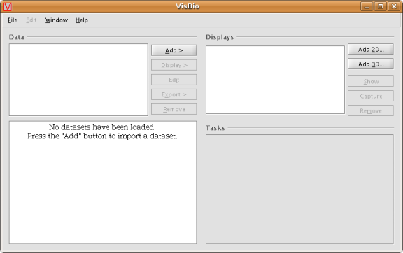
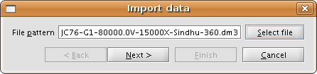
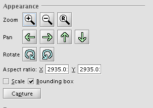
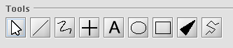
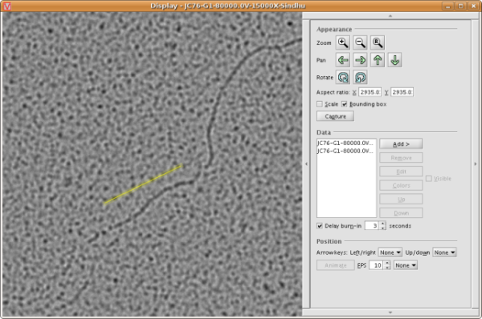
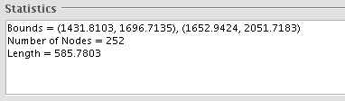
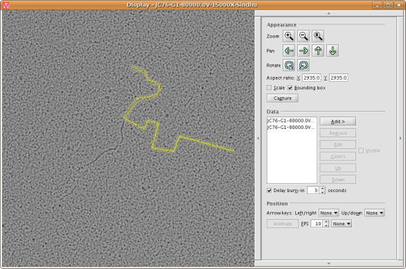
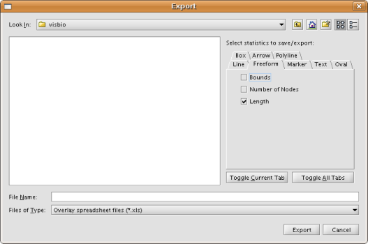
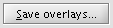

Tutorial by Abraham Sorber
This tutorial is intended to help you start taking measurements as quickly as possible in VisBio.
Double click the VisBio icon on the desktop to start the program. The red VisBio logo will appear with a progress bar indicating that VisBio is loading. Then the main VisBio screen appears:

To load images into VisBio, click the "Add >" button and then select "Dataset" from the menu. The "Import data" window appears:
Click the "Select File" button, then pick the file you want to load. If the file you want to load is part of a numbered series, VisBio will try to guess the other files in the series and load them all as one dataset.
Click the "Next >" button.

VisBio will read the dimensions of the image in microns if possible from the image.

Click the "Finish" button. VisBio will load the image and offer you several display options.
Select the option "In 2D with overlays" and click the "Ok" button.

Click "OK" in this window to generate the display.

VisBio will display two windows: 1) the Display window, containing your image and 2) the Tools window, which you will use for drawing measurements.

First, use the display window's controls to zoom, pan, and rotate the image. These are located at the top right of this window under "Appearance":

You can also click and drag with the right mouse button to pan the image, or drag while holding shift to zoom.
There are several tools which can be used for measurements. Select the tool you want by clicking its icon in the tools window:


Use the line tool for measuring straight lines. Click and drag to draw a line.

The line's length appears in the "Statistics" area of the tools window.


Use the freeform tool for measuring curved lines. Click and drag to draw a freeform line.

The freeform's length appears in the "Statistics" area of the tools window.


The polyline tool can also be used for measuring curved lines. Click once to place a new "node" in the polyline. Double-click to end the polyline.

To view measurements in a spreadsheet application such as Excel, click "Export overlays..." in the tools window.

Before exporting, you may select the statistics you wish to include in the Excel file (these are the same statistics that appear in the "Statistics" area of the control window). By default, all statistics are exported. You may want to "turn off" some statistics to make your files easier to read.

The .xls file generated looks like this:


If you want to reload your measurements at a later time, click "Save overlays..." in the tools window. As when exporting, you may select which statistics to store in the text file. (Note: these statistics are printed in the text file for your convenience only—when you reload your measurements later, VisBio will recalculate all overlay statistics, whether explicitly saved or not.)

VisBio will save your overlays to a text file which it can reread. These text files contain the same information as the Excel files which VisBio generates, and are formatted almost identically:

Follow this tutorial up to step 2. Then click "Load overlays..." in the Controls window.

Select the text file containing the overlays you wish to load and click OK.

VisBio will reload your overlays for you to view or modify.